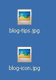
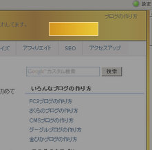
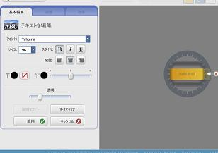

ブログのアイコンバナーの作り方
ブログランキングや相互リンクなど、何かと必要になることが多いブログのアイコンバナーですが、今回はグーグル無料ツールの picasa を使用して、手作りバナーを作ってみました。
結論からいうとアイコンバナーの出来栄えはこんな感じです。


金色なんでブログランキングサイトなどでは目だっていい感じですが、相互リンクなどではたぶん、嫌がられるんじゃないかなって気がします。
ブログSEO的に、アンカーテキストだけの被リンクよりも、画像のaltキーワード入りの被リンクなど、多様性のある被リンクの方がSEO的にもよさげかなって思ったんで作ってみた次第です。
アイコンバナーの標準規格は横 88px 縦 31px が多いようなんですが、多少大きくなってしまったようです。
グーグル無料ツールのpicasaでブログアイコン作成
今回、私が使用したツールはグーグルの無料ツールのpicasaなんですが、これは主に、画像や写真の編集をするためのものらしいです。
画像アルバムのような使い方ができるのですが、ウィンドウズに付属のペイントなどの画像編集機能と比較して、テキストの挿入やコントラストの調節、グラデーション効果やセピア効果などいろいろできるようです。
インストールすると、若干デスクトップの画像ファイルのアイコンの印象が変わってしまいますが、ファイル的には変化ないので、たぶんそのうち慣れると思います。

デフォルトで画像を開く度に Picasa で開くようになってしまいますが、画像ファイル右クリック「プログラムから開く」で今までのペイントなどでも開くことができるようです。
picasaはウェブ上で公開される「ウェブアルバム」っていうのと連動しているのですが、パソコン内のプライベートな画像を間違ってウェブ上にアップロードしないように注意しましょう。
ブログアイコンバナーの作り方手順としては、まず、元となる背景素材が必要になってきます。
今回は簡単に、自分のブログの背景画像をキャプチャーで切り取って背景素材としたのですが、適当な画像をキャプチャーして貼り付ければ簡単です。

- 背景素材をゲット
- 文字入力
- バナー素材の加工
- 大きさの調節
背景素材はブログデフォルトのものだと著作権があるので、自分でグラデーション素材を作成すると楽しいのでおすすめです。
アイコンバナーの背景画像をゲットしたら、その画像を開き、そこにブログ名などの文字を入力して位置や大きさも調節します。

大きさを調節してみたり、コントラストを調節したりするのですが、画像の加工方法の詳細については、picasa の公式サイトをご参照ください。
ブログアイコンバナーとSEO効果
今回ブログのアイコンバナーを作成してみたのは、多様性のある被リンクはSEO的にどうなんだろうっていう疑問があったからなんです。
アンカーテキストでの、ブログタイトル名ばかりの被リンクよりも、alt にキーワードの入った画像での被リンクなど様々なバリエーションがあった方がいいような気もします。
ブログSEO的に効果があるのかないのかは分かりませんが、ブログランキングなどで活用してみようと思ってます。
- ブログのタイトルバナー画像の作り方
ブログ名やサイト名などブログの顔になるタイトルバナーですが、アイコンや画像を作成しておしゃれバナーを作成している人が多いようです。このブログでもいちおうはタイトルバナーをフッターに画像として作っている... - 見やすいブログやサイトのフォント
ブログのスタイルシートでフォントを指定すると意図したフォント順で表示されるようになりますが、見やすいサイトやブログではどのようなフォントを使用しているのでしょうか。前の記事でおしゃれフォントの記事を書... - 無料ブログにファビコン作り方
無料ブログにファビコンを作成する際の作り方について記事を書こうって思います。ファビコン自体の作り方はわりと簡単ですが、ＩＥやファイアーフォックスでの表示のされ方に違いがあるようです。ファビコンとはブラ... - ブログランキングサイトの一覧と比較
おすすめブログランキングサイトの一覧と比較情報です。 空 ブログランキング【くつろぐ】ランキングはこちらをクリック！ 空 あなたのブログからアクセスがあるとポイントが付与され、ランキングで... - 無料画像のブログで使い方
ブログの画像を作るには、やっぱデジカメで写真をとってアップロードするっていうのが一番簡単かと思いますが、たいていの人は初心者というのが普通なんで、自分でとっても、逆光とかになってきたない画像しかとれな... - ブログロゴ作成の無料ツール
ブログのロゴやバナー画像を作成する無料ツールにもいろいろありますが、今回は GIMP という無料ツールを使って、初心者簡単にタイトルバナーを作ってみました。結論からいうと、できばえはこんな感じなんです...